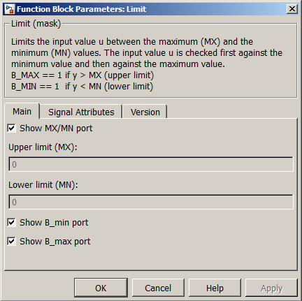
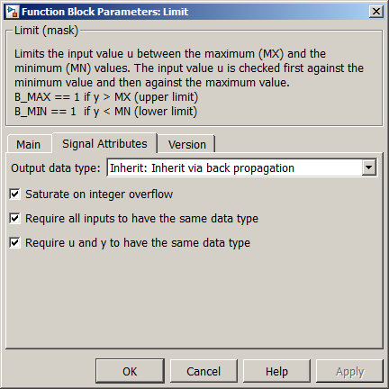

| MBDS Environment |
|
Limit |
MATLAB Helpdesk |
General
Limits the input value between the maximum and the minimum values.
Library
DescriptionMBDS Blockset
The input signal u is limited between maximum value MX and minimum value MN. The input value u is checked first against the maximum value and then against the minimum value
Using the parameter mask the block can be configured according to the users needs. Via register card Main the block input and output ports can be shown or hidden (see Figure 1).
- Show MX/MN port. If checked, the block provides an enable input port for MX and MN.
- Upper limit (MX). Here the upper limit (MX) can be specified if Show MX/MN port is hidden.
- Lower limit (MN). Here the Lower limit (MN) can be specified if Show MX/MN port is hidden.
- Show B_min port. If checked, the block provides an outport for the lower limitation flag.
- Show B_max port. If checked, the block provides an outport for the upper limitation flag.

Figure 1: Parameter Mask Dialog - Register card MainVia the register card Signal Attributes signal related attributes can be configured (see Figure 2).

- Output data type. The data type of the output signal can be configured here.
- Saturate on integer overfow. If checked, the output signal is saturated to the minimum or maximum of the output signal data type.
- Require all inputs to have the same data type. If checked, then all the inputs will have the same data type.
- Require u and y to have the same data type. If checked, then port u and port y will have the same data type.
Figure 2: Parameter Mask Dialog - Register card Signal AtrributesThe register card Version displays the block version information.
Inputs and Outputs
Example
Port I/O Data Type Description MX In Any Upper limitation value MN In Any Lower limitation value u
In
Any
Input signal y Out Any Limited input signal B_min Out boolean Outputs true if lower limitation is active B_max Out boolean Outputs true if upper limitation is active
Refer to the example.